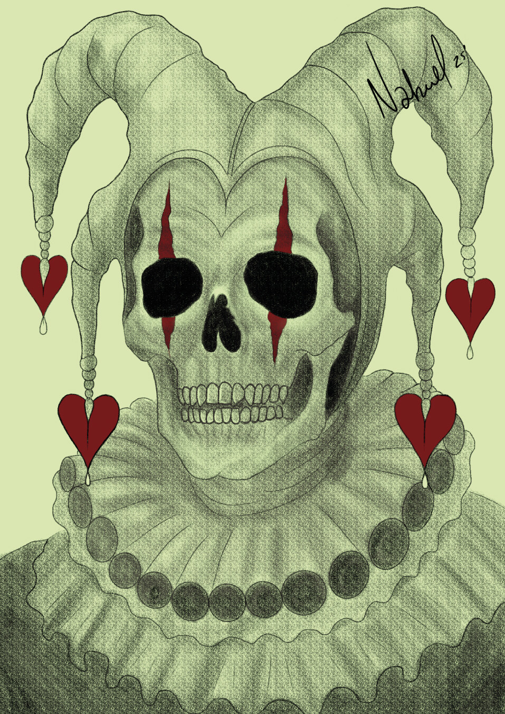
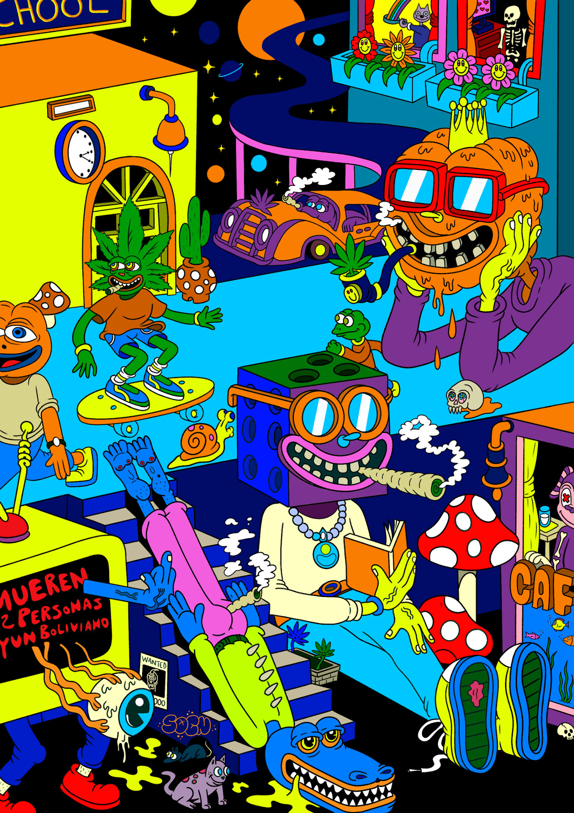
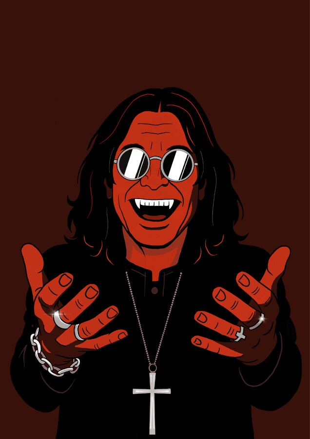
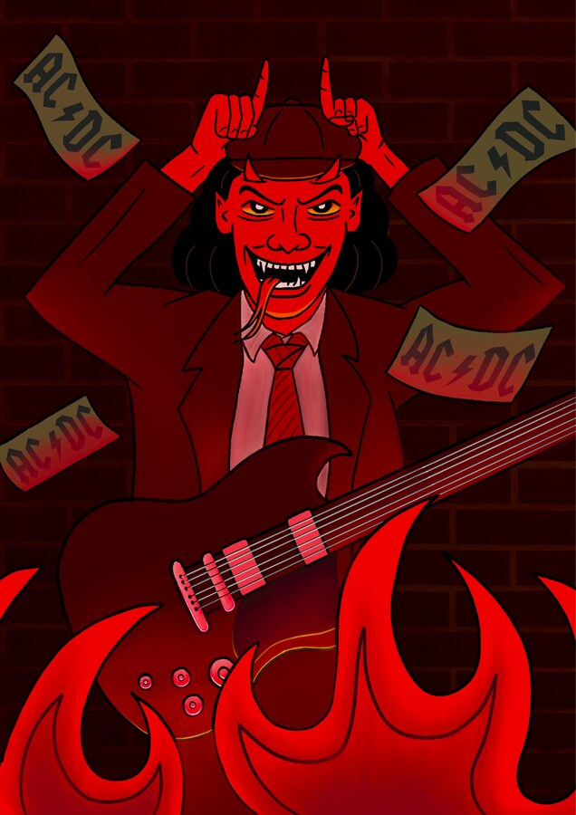

Buenos Aires, Argentina
Nahuel Ibarra
Trabajo como desarrollador Frontend en la Facultad de Diseño y Comunicación de la Universidad de Palermo y, al mismo tiempo, me dedico a la ilustración.
Suelo trabajar con una estética gótica y oscura, pero no me cierro a un solo estilo. Me adapto a diferentes propuestas y busco que cada ilustración tenga su propia identidad.


Weedsterman
Ilustración con colores saturados, estilo psicodélico buscando parodiar famosos personajes animados y situaciones de la vida cotidiana.
Ver el detalle →Ilustración y desarrollo web
Trabajo como desarrollador Frontend y, en paralelo, desarrollo mi trabajo como ilustrador
Ilustración
Diseño y desarrollo sistemas de personajes, definiendo para cada uno una identidad visual y una paleta de colores propia. El trabajo combina construcción de personajes, exploración visual y desarrollo de un lenguaje gráfico coherente.
Ver galería →Diseño web
Maquetado con HTML, SCSS y Bootstrap, con foco en grillas responsivas, animaciones sutiles y sitios que se adaptan a cualquier pantalla.
Ver proyecto →Acido Argentino
Estoy desarrollando una revista dedicada al heavy metal nacional e internacional, con contenido sobre bandas, novedades y próximos recitales. Estas son algunas de las ilustraciones realizadas para el proyecto.

